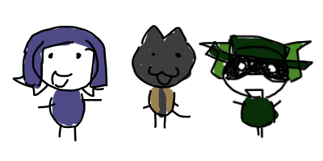

Back to directory

The 3 godly Shmorpsmp Babies. The Killer, The Defenser, And the Healer
Shmorpsmp babies
The Shmorpsmp babies are a kind of babies where you come from the spawn And you turn into a shmorpsmp baby. The Shmorpsnp babies have a very special abilities where you can fight and know knowledge as babies. The knowledge s are:
Fighting, Learning, And most ofall, Flying. The Shmropsmp babies are very Strong and can kill mobs in one hit. tHE Shmrpsmp babies can jump on rockets and kill zoxie because she sucks
The Shmorpsmp babies are very op and can kill Ryan in 1 hit. Once you unlock the Shmorpsmp babies, You own the server now
HOW TO GET THE SHMORPSMP BABY: First, atlk to Legacykit under the bridge, say "Give me baba]" in the chat once you're done talking to him. Talk to him again and he will say: So You Want The Shmorpsmp Babies Right? Do You Want Them, Right?
KEEP IN NOTE THAT:
Legacykit will kick you out of tge game if you dont have jeef the lkiller. Speak to him again once you got jeff the killer You must own jeffthe killer. The link to the Tootorial is here: https://www.youtube.com/watch?v=q7f5zNjQOdw Once you have unlocked jeff the killer, Talk to him again and he will say:
So You Have Found The Jeff, Huh? Kill 10 people With Wooden Sword In A Row, Then Come Back To Me. Talk to me after My Quest
Keep in note that you are only able to get jeff the kiler EVERY 10 of october. Be quick or wait Now that you got The quest done, Talk to him again and you will get the very secret skin of jeff. Then after tht. Wait 15 minutes next to Htch 1. Nw that you have done that, Speak to legocykit again and he will give you the ability to talk to yellow beastshot. Go on the tower with the cheese glitch and speak to beastshot. This is wwhat he will say.
"Hello my child, it seems like you are here to collect the "Shmorpsmp Babies." My son, You must kill 20 people in a row with the jeff the killer skin. Come back to me later. My son."
Once you have done that. Speak to him and he will give you the babies. BUT WATCH OUT. THye are bvery strong. You wouldn t like holding them. I dont recommend it.
|